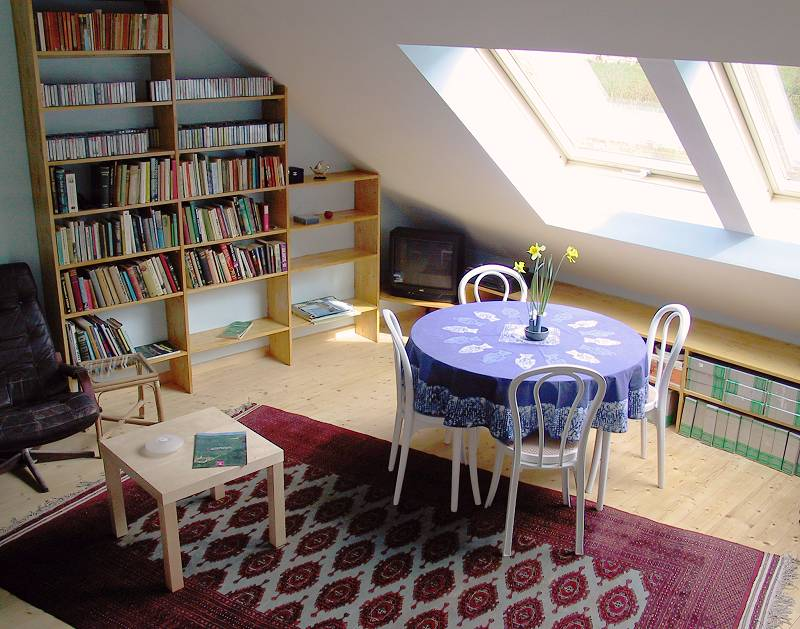
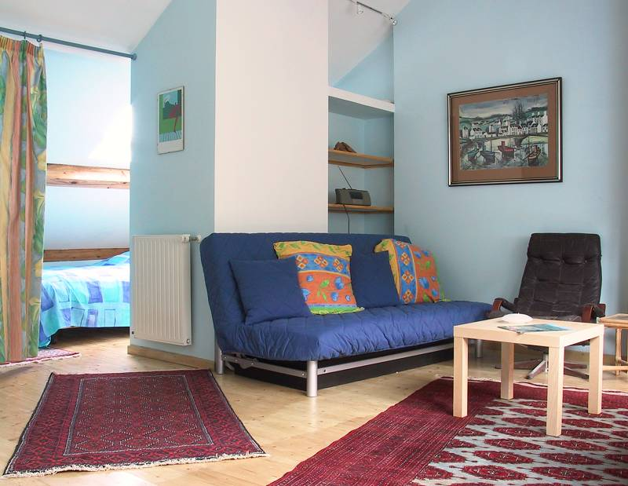
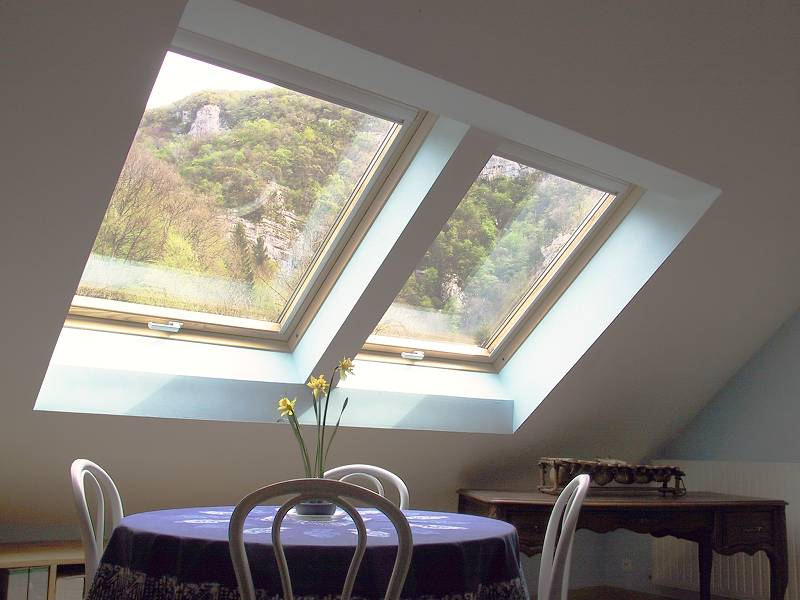
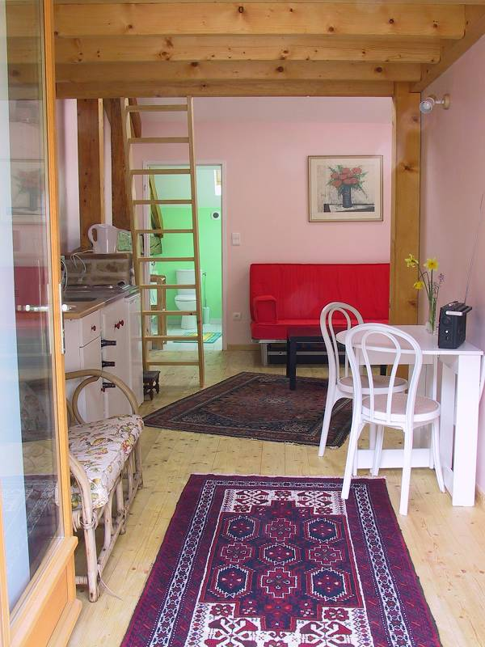
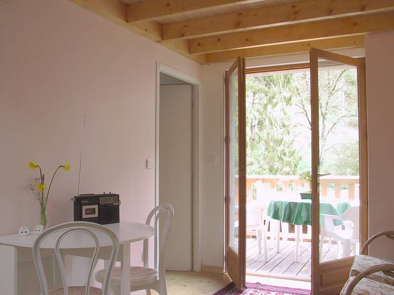
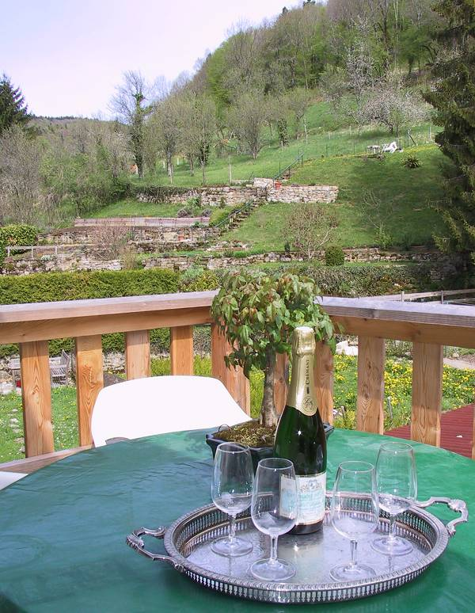
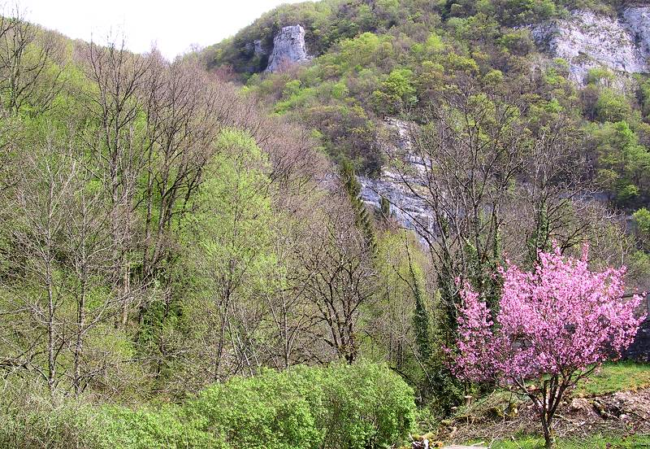

La Maison Rose
Francis Geere
11 Rue du Chateau, 25330 Nans-sous-Sainte Anne, Franche Comté, France
Your Accommodation
The Loft
The converted attic of the cottage: spacious, light and airy.
Open plan, but with two discreetly separated sleeping areas.
One large double-bed, and one double sofa-bed. Bed linen and towels provided.
En-suite WC, good pressure shower and hand-basin.
Electric stove, microwave/grill oven and full range of kitchen equipment.
Fridge-freezer, writing-desk, and ‘library’ of local information.
DVD, CD and radio facilities.
Table fan for summer, and central heating for winter comfort.
Large Velux windows offer magnificent views to the cliffs and ‘via ferrata’ climbing route above the house.
Access to the garden with BBQ facilities and loungers, and to the edge of a stream.
Independent entrance via two gentle flights of stairs.
Garage storage facilities.
Washing/ironing facilities by arrangement.
WIFI Internet access.
 
All-inclusive Tariff : November to March: from £220 (€240) per week
April to October: from £240 (€260) per week
(normally Saturday to Saturday but see below)
*****************************************************
The Mezzanine
A first floor conversion: light and airy. Open plan, but with main sleeping area on an upper mezzanine floor.
One large double-bed, and one double sofa-bed. Bed linen and towels provided.
En-suite WC, good pressure shower and hand-basin.
Electric stove, microwave/grill oven and coffee machine. Fridge-freezer, and ‘library’ of local information.
Table fan for summer, and central heating for winter comfort.
Patio-doors lead onto a timber balcony looking onto the hillside beside the house.
Access to garden and stream with barbecue facilities and sun-loungers.
Independent access via one gentle flight of stairs.
Video-cassette, CD and radio facilities.
Garage storage facilities.
Washing/ironing facilities by arrangement.
WIFI Internet access.
 
All-inclusive Tariff : November to March: from £205 (€225) per week
April to October: from £225 (€245) per week
(normally Saturday to Saturday but see below)
………………………………………………………………………………………………
Well-behaved pets are welcomed, but indoor smokers are not!
The view from the Loft

All requests considered seriously. Discounted rates for longer stays. Ask for a quotation.
Meeting and transport to/from local airports/railway stations can be arranged at moderate extra cost.
The nearest international airport is that of Geneva. The nearest railway stations served by the French (high-speed) TGV network are at Mouchard and Besancon.
On other Pages:
|
The Accommodation |
||